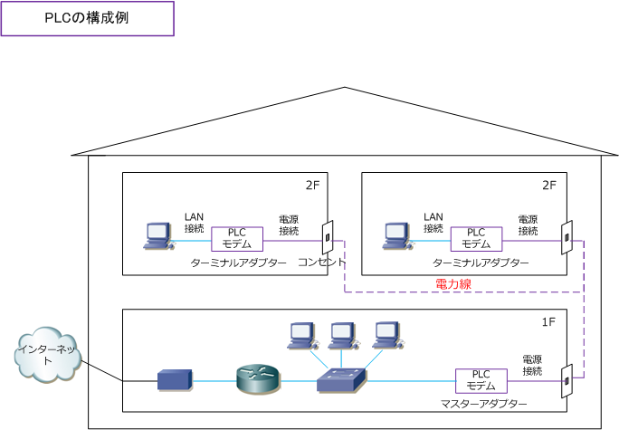
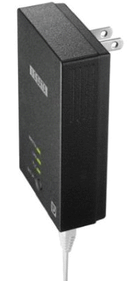

PLC - Power Line Communication
PLC（Power Line Communication）とは
PLCは、電力線を通信回線として使用する技術です。電力線通信、高速電力線通信とも呼ばれています。
| PLC | 周波数 | 特徴 |
|---|---|---|
| 低速PLC | 10kHz ～ 450kHz | 9600bpsの低速であり、この周波数での製品は現在ほぼない |
| 高速PLC | 2MHz ～ 50MHz | 2006年10月に省令改正して使用できるようになった周波数であり現在の主流 |
現在の企業ネットワークや家庭ネットワークは、有線LANではイーサネットLANで構築されており、PLCで 構築することは先ずありませんが、UTPケーブルが敷設できない環境や、無線LANの電波が届かない特殊な 環境（小規模ネットワーク）で、このPLCを使用することが稀にあります。ただし、PLCによる漏洩電波が 無線通信や医療機器に影響を与える可能性があると指摘されていることもあり、基本的に普及していません。
PLCの構成
PLCを利用するためには最低でも2台のPLCモデムが必要です。1つをマスターアダプターとして使用して もう1つをターミナルアダプターとして使用します。また、PLCが電力線を使用するとはいえPLCモデムへは UTPのLANケーブルで接続します。家庭内ネットワークでは電子レンジなどの影響を受けて無線LAN環境で 快適に通信できない人は、以下のような構成でPLCモデムを使用している人が少なからずいらっしゃいます。

PLC - 通信規格
日本国内で利用可能なPLCの通信規格には以下の3つがあります。現在、国内で主流な規格はHD-PLCです。
| PLCの通信規格 | 説明 |
|---|---|
| HD-PLC | CEPCA(CE-Powerline Communication Alliance)で作られた規格で、同団体のパナソニックの登録商標。 |
| HomePlug AV | HomePlug Powerline Alliance（HomePlug）で作られた規格。この団体はアメリカ合衆国の業界団体。 |
| UPA | UPA (Universal Powerline Association) という団体で作られた規格。この団体はスペインの業界団体。 |
HD-PLCの特徴は以下の通りです。210Mbpsは理論上の最大通信速度でありノイズにより速度が低下します。
| 変調方式 | メディアアクセス制御方式 | 暗号技術 | 使用周波数帯 | 最大物理速度 |
|---|---|---|---|---|
| Wavelet OFDM/PAM | TDMA・CSMA/CA | AES 128bit | 4 - 28MHz | 210Mbps |
HD-PLCに準拠した世界初の第3世代PLCアダプター
現在販売されているPLC製品は、HD-PLCに準拠した第3世代PLCアダプターです。最大240Mbps（規格値）の 高速通信を実現しています。PLCネットワーク接続ができなかった場合のペイバックシステムなどもあります。
